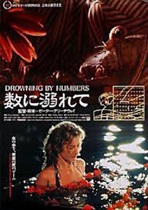
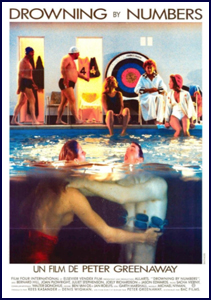
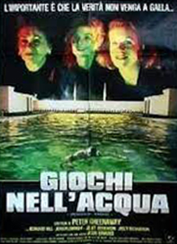
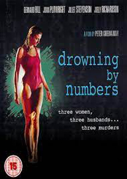
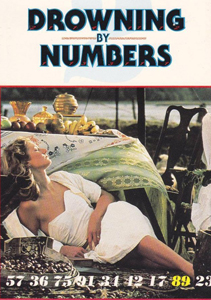
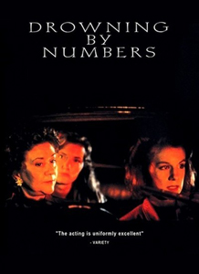

In Drowning by Numbers, number-counting, the rules of games and the repetitions of the plot are all devices which emphasise structure. Through the course of the film each of the numbers 1 to 100 appear, the large majority in sequence, often seen in the background, sometimes spoken by the characters. The film is set and was shot in and around Southwold, Suffolk, England, with key landmarks such as the Victorian water tower, Southwold Lighthouse and the estuary of the River Blyth clearly identifiable.
The film's plot centres on three married women - a grandmother, her daughter, and her niece - each named Cissie Colpitts. As the story progresses, each woman successively drowns her husband. The three women are played by Joan Plowright, Juliet Stevenson and Joely Richardson, while Bernard Hill plays the coroner, Madgett, who is cajoled into covering up the three crimes.



On Greenaway's specific instructions, the film's musical score by Michael Nyman is entirely based on themes from the slow movement of Mozart's Sinfonia Concertante in E flat, bars 58 to 61 of which are heard in their original form immediately after each drowning.
Reviews for Drowning by Numbers were mostly favourable, with the film earning a 91% approval rating on 'Rotten Tomatoes'. Roger Ebert, however, gave the work two stars, praising its landscapes as beautifully photographed but also concluding, "When the movie was over, I was not sure why Greenaway made it."


